소방설비산업기사(전기) (2019-03-03 기출문제)
1과목: 소방원론
1. 니트로셀룰로오스의 용도, 성상 및 위험성과 저장·취급에 대한 설명 중 틀린 것은?
- 질화도가 낮을수록 위험성이 크다.
- 운반 시 물, 알코올을 첨가하여 습윤시킨다.
- 무연화약의 원료로 사용된다.
- 햇빛에서 황갈색으로 변하고 물에 녹지 않지만 아세톤, 초산에스터, 니트로벤젠에 녹는다.
(정답률: 70%)

2. 포소화약제가 유류화재를 소화시킬 수 있는 능력과 관계가 없는 것은?
- 수분의 증발잠열을 이용한다.
- 유류표면으로부터 기름의 증발을 억제 또는 차단한다.
- 포의 연쇄반응 차단효과를 이용한다.
- 포가 유류 표면을 덮어 기름과 공기와의 접촉을 차단한다.
(정답률: 51%)
3. 소화제의 적용대상에 따라 분류한 화재종류 중 C급 화재에 해당되는 것은?
- 금속분화재
- 유류화재
- 일반화재
- 전기화재
(정답률: 89%)
4. 다음 중 부촉매 소화효과로서 가장 적절한 것은?
- CO2
- C2F4Br2
- 질소
- 아르곤
(정답률: 76%)
5. 인화점에 대한 설명 중 틀린 것은?
- 인화점은 공기 중에서 액체를 가열하는 경우 액체표면에서 증기가 발생하여 점화원에서 착화하는 최저온도를 말한다.
- 인화점 이하의 온도에서는 성냥불을 접근시켜도 착화하지 않는다.
- 인화점 이상 가열하면 증기가 발생되어 성냥불이 접근하면 착화한다.
- 인화점은 보통 연소점 이상, 발화점 이하의 온도이다.
(정답률: 73%)
6. 등유 또는 경유 화재에 해당하는 것은?
- A급 화재
- B급 화재
- C급 화재
- D급 화재
(정답률: 88%)
7. 소화기의 소화약제에 관한 공통적 성질에 대한 설명으로 틀린 것은?
- 산알칼리 소화약제는 양질의 유기산을 사용한다.
- 소화약제는 현저한 독성 또는 부식성이 없어야 한다.
- 분말상의 소화약제는 고체화 및 변질 등 이상이 없어야 한다.
- 액상의 소화약제는 결정의 석출, 용액의 분리, 부유물 또는 침전물 등 기타 이상이 없어야 한다.
(정답률: 81%)
8. 연소 시 분해연소의 전형적인 특성을 보여줄 수 있는 것은?
- 나프탈렌
- 목재
- 목탄
- 휘발유
(정답률: 68%)
9. 플래시 오버 (Flash-over) 현상과 관련이 없는 것은?
- 화재의 확산
- 다량의 연기 방출
- 화이어볼의 발생
- 실내온도의 급격한 상승
(정답률: 76%)
10. 위험물안전관리법령에서 정한 제5류 위험물의 대표적인 성질에 해당하는 것은?
- 산화성
- 자연발화성
- 자기반응성
- 가연성
(정답률: 81%)
11. 가연물이 연소할 때 연쇄반응을 차단하기 위해서는 공기 중의 산소량을 일반적으로 약몇 % 이하로 억제해야 하는가?
- 15
- 17
- 19
- 21
(정답률: 65%)
12. 물의 소화작용과 가장 거리가 먼 것은?
- 증발잠열의 이용
- 질식 효과
- 에멀젼 효과
- 부촉매 효과
(정답률: 81%)
13. 스테판-볼츠만(Stefan-Boltzmann)의 법칙에서 복사체의 단위표면적에서 단위시간당 방출되는 복사에너지는 절대온도의 얼마에 비례하는가?
- 제곱근
- 제곱
- 3제곱
- 4제곱
(정답률: 78%)
14. 화재 시 고층건물내의 연기 유동인 굴뚝효과와 관계가 없는 것은?
- 건물내외의 온도차
- 건물의 높이
- 층의 면적
- 화재실의 온도
(정답률: 70%)
15. 목재가 열분해할 때 발생하는 가스가 아닌 것은?
- 수증기
- 염화수소
- 일산화탄소
- 이산화탄소
(정답률: 73%)
16. 제2종 분말소화약제의 주성분은?
- 탄산수소칼륨
- 탄산수소나트륨
- 제1인산암모늄
- 탄산수소칼륨 + 요소
(정답률: 70%)
17. 15℃의 물 1g을 1℃ 상승시키는데 필요한 열량은 몇 cal 인가?
- 1
- 15
- 1000
- 15000
(정답률: 69%)
18. 질산에 대한 설명으로 틀린 것은?
- 산화제이다.
- 부식성이 있다.
- 불연성 물질이다.
- 산화되기 쉬운 물질이다.
(정답률: 57%)
19. 270℃ 에서 다음의 열분해 반응식과 관계가 있는 분말 소화약제는?
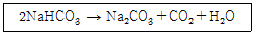
- 제1종 분말
- 제2종 분말
- 제3종 분말
- 제4종 분말
(정답률: 71%)
20. 건축물의 방재센터에 대한 설명으로 틀린 것은?
- 피난층에 두는 것이 가장 바람직하다.
- 화재 및 안전관리의 중추적 기능을 수행한다.
- 방재센터는 직통 계단위치와 관계없이 안전한 곳에 설치한다.
- 소방차의 접근이 용이한 곳에 두는 것이 바람직하다.
(정답률: 79%)
2과목: 소방전기회로
21. 소형이면서 고압의 대전류용 정류기로 사용되는 것은?
- 게르마늄 정류기
- 사이리스터 정류기
- 수은 정류기
- 셀렌 정류기
(정답률: 76%)
22. 온도가 증가하면 저항 값이 감소하는 소자는?(오류 신고가 접수된 문제입니다. 반드시 정답과 해설을 확인하시기 바랍니다.)
- 다이오드
- 사이리스터
- 서미스터
- 트라이악
(정답률: 67%)
23. 테브난의 정리를 이용하여 그림 (a)의 회로를 그림 (b)와 같은 등가회로로 만들고자 할 때 E(V)와 R(Ω)은?
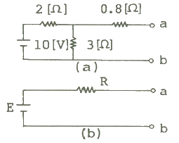
- 5, 2
- 5, 3
- 6, 2
- 6, 3
(정답률: 48%)
24. 변위를 임피던스로 변환하는 변환요소가 아닌 것은?
- 가변저항기
- 용량형 변환기
- 가변저항 스프링
- 전자 코일
(정답률: 67%)
25. 목표치가 임의로 변화하는 제어는?
- 정치제어
- 추종제어
- 프로그램제어
- 시퀀스제어
(정답률: 62%)
26. 다음 중 강자성체인 것은?
- 금
- 니켈
- 알루미늄
- 구리
(정답률: 68%)
27. 축전지 내부의 전해액이 부족할 때의 조치사항으로 옳은 것은?
- 황산을 넣는다.
- 염산을 넣는다.
- (+)극을 바꾸어 준다.
- 증류수로 채운다.
(정답률: 74%)
28. 유도 전동기의 기동 시 관계로 옳은 것은? (단, T1 : 기동 시 토크, T2 : 전전압 기동 시 토크, I1 : Y-△ 기동 시 전류, I2 : 전전압 기동 시 전류)
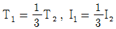
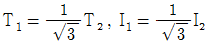
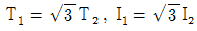
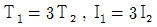
(정답률: 47%)
29. 다음 법칙 중 성격이 다른 하나는?
- 노이만의 법칙
- 페러데이의 법칙
- 렌츠의 법칙
- 암페어의 오른나사 법칙
(정답률: 56%)
30. 다음 회로에서 전전류 I는 몇 A인가?
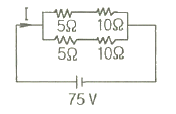
- 6
- 8
- 10
- 14
(정답률: 72%)
31. 다음 논리회로의 명칭은?
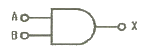
- AND
- OR
- NOT
- NAND
(정답률: 78%)
32. 전원 전압을 일정 전압으로 유지하기 위하여 사용되는 다이오드는?
- 발광 다이오드
- 제너 다이오드
- 바렉터 다이오드
- 터널 다이오드
(정답률: 79%)
33. 전해액에 전류가 흐름으로서 화학 변화를 일으키는 것을 무엇이라고 하는가?
- 국부작용
- 감극현상
- 성극(분극)작용
- 전기분해
(정답률: 57%)
34. 그림과 같이 전류계 A1, A2 를 접속하였더니 A1 에는 30A, A2 에는 10A를 지시하였다. 전류계 A2 의 내부저항은 몇 Ω 인가?
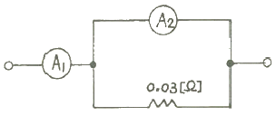
- 0.01
- 0.03
- 0.06
- 0.09
(정답률: 51%)
35. 정전압계와 콘덴서를 직렬로 접속하고 그 양단에 2000V를 가할 때 정전전압계에 인가되는 전압은 몇 V 인가? (단, 정전전압계의 정전용량은 C1(F), 콘덴서의 정전용량은 C2(F)이며 C1=4C2 관계에 있다.)
- 200
- 400
- 600
- 800
(정답률: 52%)
36. 간선의 굵기를 결정하는데 고려하지 않아도 되는 것은?
- 허용전류
- 전압강하
- 전선관의 굵기
- 기계적 강도
(정답률: 62%)
37. f(t) = sinf · cost 의 라플라스 변환은?
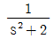
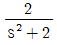
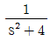
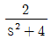
(정답률: 52%)
38. 프로세스제어에 이용되는 제어량은?
- 온도
- 전류
- 전압
- 장력
(정답률: 65%)
39. 그림과 같은 무접점회로는 어떤 논리회로를 나타낸 것인가? (단, A는 입력단자이며, X는 출력단자이다.)
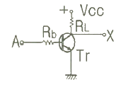
- AND
- OR
- NOT
- NAND
(정답률: 58%)
40. 저항 R 과 유도 리액턴스 XL 이 직렬로 접속된 회로의 역률은?
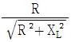
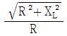
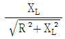
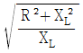
(정답률: 55%)
3과목: 소방관계법규
41. 소방기본법상 소방활동구역의 설정권자로 옳은 것은?
- 소방본부장
- 소방서장
- 소방대장
- 시·도지사
(정답률: 50%)
42. 소방신호의 종류가 아닌 것은?
- 진화신호
- 발화신호
- 경계신호
- 해제신호
(정답률: 70%)
43. 건축허가등을 함에 있어서 미리 소방본부장 또는 소방서장의 동의를 받아야 하는 건축물 등의 범위로 차고·주차장으로 사용되는 층 중 바닥면적이 몇 제곱미터 이상인 층이 있는 시설에 시설하여야 하는가?
- 50
- 100
- 200
- 400
(정답률: 65%)
44. 소방특별조사 결과에 따른 조치명령으로 인하여 손실을 입은 자에 대한 손실보상에 관한 설명으로 틀린 것은?
- 손실보상에 관하여는 시·도지사와 손실을 입은 자가 협의하여야 한다.
- 보상금액에 관한 협의가 성립되지 아니한 경우에는 시·도지사는 그 보상금액을 지급하거나 공탁하고 이를 상대방에게 알려야 한다.
- 시·도지사가 손실을 보상하는 경우에는 공시지가로 보상하여야 한다.
- 보상금의 지급 또는 공탁의 통지에 불복이 있는 자는 지급 또는 공탁의 통지를 받은 날부터 30일 이내에 관할토지수용위원회에 재결을 신청할 수 있다.
(정답률: 69%)
45. 위험물안전관리법령상 인화성액체위험물(이황화탄소를 제외)의 옥외탱크저장소의 탱크 주위에 설치하여야 하는 방유제의 기준 중 틀린 것은?
- 방유제의 용량은 방유제안에 설치된 탱크가 하나인 때에는 그 탱크 용량의 110% 이상으로 할 것
- 방유제의 용량은 방유제안에 설치된 탱크가 2기 이상인 때에는 그 탱크 중 용량이 최대인 것의 용량의 110 % 이상으로 할 것
- 방유제의 높이 1m 이상 3m 이하, 두께 0.2m 이상, 지하매설깊이 0.5m 이상으로 할 것
- 방유제내의 면적은 80000m2 이하로 할 것
(정답률: 65%)
46. 다음 위험물 중 위험물안전관리법령에서 정하고 있는 지정수량이 가장 적은 것은?
- 브롬산염류
- 유황
- 알칼리토금속
- 과염소산
(정답률: 50%)
47. 대통령령이 정하는 특정소방대상물에는 관계인이 소방안전관리자를 선임하지 않은 경우의 벌금 규정은?
- 100 만원 이하
- 200 만원 이하
- 300 만원 이하
- 1천만원 이하
(정답률: 69%)
48. 화재예방, 소방시설 설치·유지 및 안전관리에 관한 법령상 근무자 및 거주자에게 소방훈련·교육을 실시하여야 하는 특정소방대상물의 기준 중 다음 ( )에 알맞은 것은?
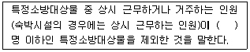
- 3
- 5
- 7
- 10
(정답률: 66%)
49. 소방시설공사업법상 소방시설업자가 등록을 한 후 정당한 사유 없이 1년이 지날 때까지 영업을 개시하지 아니하거나 계속하여 1년 이상 휴업한 때는 몇 개월 이내의 영업정지를 당할 수 있나?
- 1개월 이내
- 2개월 이내
- 3개월 이내
- 6개월 이내
(정답률: 62%)
50. 자동화재탐지설비를 설치하여야 하는 특정소방대상물의 기준으로 틀린 것은?
- 지하구
- 지하가 중 터널로서 길이 700m 이상인 것
- 노유자 생활시설
- 복합건축물로서 연면적 600m2 이상인 것
(정답률: 44%)
51. 자체소방대를 설치하여야 하는 제조소 등으로 옳은 것은?
- 지정수량 3000배의 아세톤을 취급하는 일반취급소
- 지정수량 3500배의 칼륨을 취급하는 제조소
- 지정수량 4000배의 등유를 이동저장탱크에 주입하는 일반취급소
- 지정수량 4500배의 기계유를 유압장치로 취급하는 일반취급소
(정답률: 48%)
52. 소방기본법령상 소방용수시설별 설치기준 중 틀린 것은?
- 급수탑 개폐밸브는 지상에서 1.5m 이상 1.7m 이하의 위치에 설치하도록 할 것
- 소화전은 상수도와 연결하여 지하식 또는 지상식의 구조로 하고, 소방용호스와 연결하는 소화전의 연결금속구의 구경은 100mm로 할 것
- 저수조 홉수관의 투입구가 사각형의 경우에는 한 변의 길이가 60cm 이상, 원형의 경우에는 지름이 60cm 이상일 것
- 저수조는 지면으로부터의 낙차가 4.5m 이하일 것
(정답률: 56%)
53. 소방기본법령상 특수가연물의 저장 기준 중 ㉠, ㉡, ㉢ 에 알맞은 것은? (단, 석탄·목탄류를 발전용으로 저장하는 경우는 제외한다.)
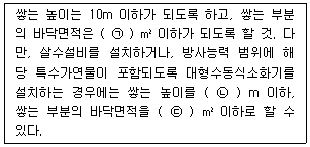
- ㉠ 200, ㉡ 20, ㉢ 400
- ㉠ 200, ㉡ 15, ㉢ 300
- ㉠ 50, ㉡ 20, ㉢ 100
- ㉠ 50, ㉡ 15, ㉢ 200
(정답률: 60%)
54. 화재예방, 소방시설 설치·유지 및 안전관리에 관한 법령상 특정소방대상물의 피난시설, 방화구획 또는 방화시설의 폐쇄·훼손·변경 등의 행위를 한 자에 대한 과태료 기준으로 옳은 것은?
- 200만원 이하의 과태료
- 300만원 이하의 과태료
- 500만원 이하의 과태료
- 600만원 이하의 과태료
(정답률: 61%)
55. 위험물안전관리법상 제1류 위험물의 성질은?
- 산화성 액체
- 가연성 고체
- 금수성 물질
- 산화성 고체
(정답률: 75%)
56. 화재조사를 하는 관계인의 정당한 업무를 방해하거나 화재조사를 수행하면서 알게 된 비밀을 다른 사람에게 누설한 사람에 대한 벌칙은?
- 100만원 이하의 벌금
- 150만원 이하의 벌금
- 200만원 이하의 벌금
- 300만원 이하의 벌금
(정답률: 62%)
57. 화재예방, 소방시설 설치·유지 및 안전관리에 관한 법령상 특정소방대상물의 관계인이 특정소방대상물의 규모·용도 및 수용인원 등을 고려하여 갖추어야 하는 소방시설의 종류 기준 중 ㉠, ㉡에 알맞은 것은?
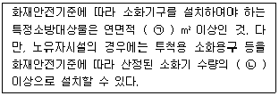
- ㉠ 33, ㉡ 1/2
- ㉠ 33, ㉡ 1/3
- ㉠ 50, ㉡ 1/2
- ㉠ 50, ㉡ 1/3
(정답률: 64%)
58. 소방활동구역의 출입자로서 대통령령이 정하는 자에 속하지 않는 사람은?
- 의사·간호사 그 밖의 구조 구급업무에 종사하는자
- 소방활동구역 밖에 있는 소방대상물의 소유자·관리자 또는 점유자
- 취재인력 등 보도업무에 종사하는 자
- 수사업무에 종사하는 자
(정답률: 69%)
59. 화재예방, 소방시설 설치·유지 및 안전관리에 관한 법령상 소방안전관리대상물의 소방계획서에 포함되어야 하는 사항이 아닌 것은?
- 예방규정을 정하는 제조소등의 위험물 저장·취급에 관한 사항
- 소방시설·피난시설 및 방화시설의 점검·정비계획
- 특정소방대상물의 근무자 및 거주자의 자위소방대 조직과 대원의 임무에 관한 사항
- 방화구획, 제연구획, 건축물의 내부 마감재료(불연재료·준불연재료 또는 난연재료로 사용된 것) 및 방염물품의 사용현황과 그 밖의 방화구조 및 설비의 유지·관리계획
(정답률: 37%)
60. 화재예방, 소방시설 설치·유지 및 안전관리에 관한 법령상 소방시설 등에 대한 자체점검 중 종합정밀점검 대상기준으로 틀린 것은?
- 제연설비가 설치된 터널
- 노래연습장으로서 연면적이 2000m2 이상인 것
- 아파트는 연면적 5000m2 이상이고 16층 이상인 것
- 소방대가 근무하지 않는 국공립학교 중 연면적이 1000m2 이상인 것으로서 자동화재탐지설비가 설치된 것
(정답률: 49%)
4과목: 소방전기시설의 구조 및 원리
61. 화재안전기준에서 비상콘센트의 저압에 관한 설명으로 옳은 것은?(관련 규정 개정전 문제로 여기서는 기존 정답인 3번을 누르면 정답 처리됩니다. 자세한 내용은 해설을 참고하세요.)
- 직류는 550V 이하, 교류는 400V 이하인 것을 말한다.
- 직류는 650V 이하, 교류는 500V 이하인 것을 말한다.
- 직류는 750V 이하, 교류는 600V 이하인 것을 말한다.
- 직류는 850V 이하, 교류는 700V 이하인 것을 말한다.
(정답률: 76%)
62. 공장 및 창고시설 또는 업무시설로서 바닥면적이 최소 몇 m2 이상인 층이 있는 경우 자동화재속보설비를 설치해야 하는가?
- 500
- 1000
- 1500
- 2000
(정답률: 42%)
63. 청각장애인용 시각경보장치에 대한 설치기준으로 틀린 것은?
- 설치높이는 바닥으로부터 2m 이상 2.5m 이하의 장소에 설치할 것
- 천장의 높이가 2m 이하인 경우에는 천장으로부터 0.15m 이내의 장소에 설치하여야 한다.
- 공연장·집회장·관람장 또는 이와 유사한 장소에 설치하는 경우에는 시선이 분산되는 객석부 부분 등에 설치할 것
- 시각경보장치의 광원은 전용의 축전지설비 또는 전기저장장치(외부 전기에너지를 저장해 두었다가 필요한 때 전기를 공급하는 장치)에 의하여 점등되도록 할 것
(정답률: 70%)
64. 유도등 설치에 관한 설명으로 틀린 것은?
- 객석유도등은 객석의 통로, 바닥, 벽, 천장에 설치하여야 한다.
- 계단통로유도등은 바닥으로부터 높이 1m 이하의 위치에 설치하여야 한다.
- 거실통로유도등은 구부러진 모퉁이 및 보행거리 20m 마다 설치하여야 한다.
- 피난구유도등은 피난구의 바닥으로부터 높이 1.5m 이상으로서 출입구에 인접하도록 설치하여야 한다.
(정답률: 64%)
65. 자동화재탐지설비의 경계구역 설정기준으로 옳은 것은?(관련 규정 개정전 문제로 여기서는 기존 정답인 2번을 누르면 정답 처리됩니다. 자세한 내용은 해설을 참고하세요.)
- 하나의 경계구역이 1개 이상의 층에 미치지 아니하도록 할 것
- 지하구의 경우 하나의 경계구역의 길이는 700m 이하로 할 것
- 하나의 경계구역이 1개 이상의 건축물에 미치지 아니하도록 할 것
- 하나의 경계구역의 면적은 500m2 이하로 하고 한변의 길이는 50m 이하로 할 것
(정답률: 56%)
66. 비상콘센트설비의 전원부와 외함 사이의 절연저항에 대한 기준으로 옳은 것은?
- 500V 절연저항계로 측정하여 5MΩ 이상일 것
- 500V 절연저항계로 측정하여 10MΩ 이상일 것
- 500V 절연저항계로 측정하여 15MΩ 이상일 것
- 500V 절연저항계로 측정하여 20MΩ 이상일 것
(정답률: 66%)
67. 화재 시 발생하는 열, 연기, 불꽃 또는 연소생성물을 자동적으로 감지하여 수신기에 발신하는 장치는?
- 감지기
- 중계기
- 발신기
- 시각경보장치
(정답률: 71%)
68. 축전지의 자기방전을 보충함과 동시에 상용부하에 대한 전력공급은 충전기가 부담하도록 하되 충전기가 부담하기 어려운 일시적인 대전류 부하는 축전기로 하여금 부담하게 하는 충전방식은?
- 과충전방식
- 균퉁충전방식
- 자가충전방식
- 부동충전방식
(정답률: 62%)
69. 변류기는 특정소방대상물의 형태, 인입선의 시설방법 등에 따라 옥외 인입선의 제1지점의 부하측 또는 몇 종 접지선측의 점검이 쉬운 위치에 설치하는가?(관련 규정 개정전 문제로 여기서는 기존 정답인 2번을 누르면 정답 처리됩니다. 자세한 내용은 해설을 참고하세요.)
- 제1종
- 제2종
- 제3종
- 특별 제3종
(정답률: 54%)
70. 무선통신보조설비에 중폭기를 설치할 경우 설치기준으로 틀린 것은?
- 증폭기는 비상전원이 부착된 것으로 한다.
- 전원은 전기가 정상적으로 공급되는 교류전압 옥내간선으로 한다.
- 비상전원 용량은 무선통신보조설비를 유효하게 20분 이상 작동시킬 수 있는 것으로 한다.
- 증폭기의 전면에는 주회로의 전원이 정상인지의 여부를 표시할 수 있는 표시등 및 전압계를 설치한다.
(정답률: 69%)
71. 비상방송설비의 설치상태가 화재안전기준에 적합하지 않는 것은?
- 확성기의 음성입력은 3W로 하였다.
- 음량조절기를 설치하고, 음량조정기의 배선은 4선식으로 하였다.
- 조작부의 조작스위치를 바닥으로부터 1.2m의 높이에 설치하였다.
- 기동장치에 따른 화재신고를 수신한 후 필요한 음량으로 화재발생 상황 및 피난에 유효한 방송이 자동으로 개시될 때까지의 소요시간을 5초로 하였다.
(정답률: 74%)
72. 누전경보기의 수신부의 설치장소로 적합한 것은? (단, 누전경보기에 대하여 방호조치를 하지 않은 경우이다.)
- 옥내 건조한 장소
- 습도가 높고 온도의 변화가 급격한 장소
- 대전류회로·고주파 발생회로 등에 따른 영향을 받을 우려가 있는 장소
- 가연성의 증기·먼지·가스 등이나 부식성의 증기·가스 등이 다량으로 체류하는 장소
(정답률: 71%)
73. 감지기 또는 발신기로부터 발하여지는 신호를 직접 또는 중계기를 통하여 고유신호로서 수신하여 화재의 발생을 당해 소방대상물의 관계자에게 경보하여 주는 수신기는?
- R형수신기
- P형수신기
- G형수신기
- M형수신기
(정답률: 59%)
74. 비상방송설비 를 설치하여야 하는 특정소방대상물의 기준으로 옳은 것은? (단, 위험물 저장 및 처리 시설 중 가스시설, 사람이 거주하지 않는 동물 및 식물 관련 시설, 지하가 중 터널, 축사 및 지하구는 제외한다.)
- 연면적 3000m2 이상인 것
- 지하층의 총수가 3층 이상인 것
- 지하층을 포함한 층수가 11층 이상인 것
- 50명 이상의 근로자가 작업하는 옥내 작업장
(정답률: 46%)
75. 상용전원을 주전원으로 사용하는 단독경보형 감지기에 내장할 수 있는 전지는?
- 1차전지
- 2차전지
- 3차전지
- 4차전지
(정답률: 67%)
76. 주방·보일러실 퉁으로서 다량의 화기를 취급하는 장소에 설치하는 감지기는?
- 연기감지기
- 보상식감지기
- 차동식감지기
- 정온식감지기
(정답률: 63%)
77. 일반전기사업자로부터 특별고압 또는 고압으로 수전하는 비상전원 수전설비의 형태에 속하지 않는 것은?
- 방화구획형
- 옥외개방형
- 옥내개방형
- 큐비클(Cubicle)형
(정답률: 46%)
78. 휴대용비상조명등은 숙박시설 또는 다중이용업소의 객실 또는 영업장안의 구획된 실마다 잘 보이는 곳(외부에 설치 시 출입문 손잡이로부터 1m 이내 부분)에 최소 몇 개를 설치하여야 하는가?
- 1개
- 2개
- 3개
- 4개
(정답률: 60%)
79. 실내의 바닥면적이 900m2인 경우 단독경보형감지기의 최소 설치 수량은?
- 3개
- 6개
- 9개
- 12개
(정답률: 66%)
80. 무선통신보조설비에서 신호의 전송로가 분기되는 장소에 설치하는 것으로 임피던스 매칭과 신호 균퉁분배를 위해 사용하는 장치는?
- 분파기
- 혼합기
- 증폭기
- 분배기
(정답률: 75%)
니트로셀룰로오스는 무연화약의 원료로 사용되며, 햇빛에서 황갈색으로 변하고 물에 녹지 않지만 아세톤, 초산에스터, 니트로벤젠에 녹습니다. 운반 시에는 물이나 알코올을 첨가하여 습윤시키는 것이 좋습니다. 저장 및 취급 시에는 화기, 열, 불꽃으로부터 멀리하고, 밀폐용기에 보관해야 합니다.